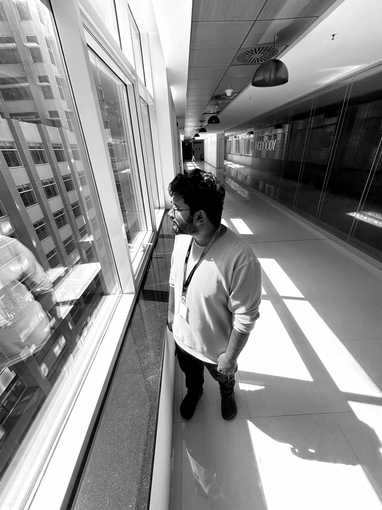
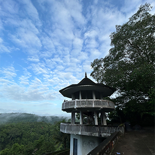
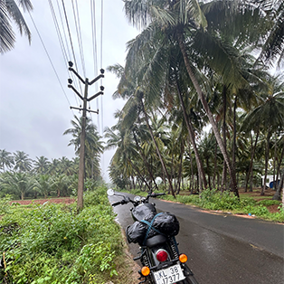

With over five years of experience in UX and Visual Design, I specialize in creating intuitive and impactful digital experiences. Having worked with a renowned MNC, I honed my skills in user-centric design, ensuring alignment with business goals. Passionate about innovation, I continuously seek growth and push creative boundaries to enhance user engagement.

Infosys + Wongdoody—January 2020 to Present
I have worked on diverse, ground-up projects, collaborating closely with clients to gather requirements and conduct user meetings for design reviews. From user research to final implementation, I have contributed across various stages, gaining valuable experience in best design practices and applying them to subsequent projects.
Fourart Designs Pvt. Ltd. —December 2018 - January 2019
Worked closely with the team to shape the visual design direction of the project, taking ownership of creating both low-fidelity wireframes and high-fidelity UI screens. Ensured that all designs were thoughtfully crafted to align with user needs, brand guidelines, and the overall project objectives, while maintaining a consistent visual language throughout the product.
Make Insta Reels and YouTube videos for fun—because why not be the next internet sensation (or at least make your friends laugh)?

